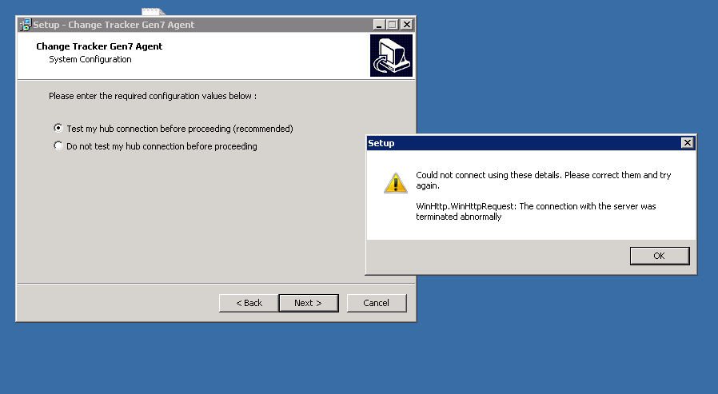

Problem
Running the NNT Gen 7 Agent installer on a Windows system and entering in the correct Hub credentials gives an error when running a test on the hub connection before proceeding with the full setup:
Resolution
- Download the Easy Fix tool here
- Run through with installing the hotfix
- Close down the NNT Gen 7 Agent installer if it is still open
- Now, try to install the NNT Gen 7 Agent again and test the Hub connection